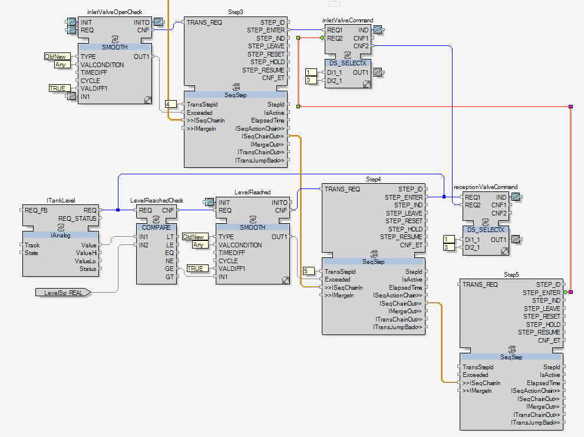
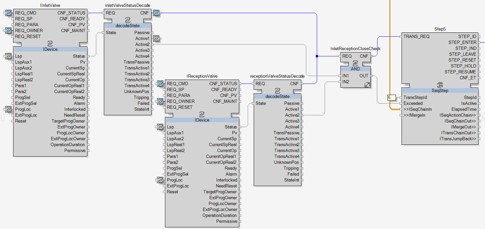

Closing the Inlet and Reception Valves Step
To start the development, add a new SeqStep function block, name it Step5 and link Step4.ISeqChainOut to Step5.ISeqChainIn.

|
NOTE:
As defined in the topic Filling Sequence Definition, in this step the reception and the inlet valves have to be closed as the level of milk in the tank is sufficient. |
To close these two valves, the DS_SELECTX function blocks used for opening them will be reused. The real purpose of these function blocks will finally be revealed with this closing action.

|
The DS_SELECTX function block allows an input variable to be connected to several output variables, which would not be possible without it.
The DS_SELECTX gets the different input values and select which one will be transmitted to the input variable of the next function block. This selection is made thanks to the events, when one event input of DS_SELECTX is triggered, then its related value is selected and transmitted to the input variable. |
Follow the next actions to add a second input variable to the DS_SELECTX function blocks and then allow to handle the closing of the valves:
-
With one of the two methods detailed in the topic Opening the Third Valve, add a second input to inletValveCommand and receptionValveCommand.
-
For both DS_SELECTX, add the constant 0 in the port DI2_1.
-
Link Step5.STEP_ENTER to inletValveCommand.REQ2, so when the step 5 is entered then the REQ2 of inletValveCommand is triggered. That leads inletValveCommand to select the second input variable, here DI2_1 with the value 0, and to transmit its value to IInletValve.Lsp to command the close of the inlet valve.
-
Link inletValveCommand.CNF2 to receptionValveCommand.REQ2, in order to create a series of actions. When DI2_1 is selected, the inletValveCommand.CNF2 is fired, which triggers receptionValveCommand.REQ2 and hence the selection of receptionValveCommand.DI2_1.


|
The actions of closing the inlet and reception valves are done. To complete this fifth step, the transition condition now has to be developed. |
As defined in the topic Filling Sequence Definition, the transition condition of this fifth step is: both inlet and reception valves are closed.
-
Add a AND function block and name it InletReceptionCloseCheck.
-
Add a decodeState function block and name it receptionValveStatusDecode.
-
Link IReceptionValve.CNF_STATUS to receptionValveStatusDecode.REQ and IReceptionValve.Status to receptionValveStatusDecode.State.
-
Link inletValveStatusDecode.CNF and receptionValveStatusDecode.CNF to InletReceptionCloseCheck.REQ. Then both decodeStatus function blocks can trigger InletReceptionCloseCheck.
-
Link inletValveStatusDecode.Active2 to InletReceptionCloseCheck.IN1.
NOTE: The port Active2 of inletValveStatusDecode, and the Valve CAT in general, is giving the close status.
The status given by this port changes from an instrument type to another, it is not always the close status. That is the reason why generic names have been given to the decodeState ports, it has to fit to all the instruments.
To know for each instrument which port is related to which status, check the decodeState documentation by selecting one of them and pressing F1.
-
Link receptionValveStatusDecode.Active2 to InletReceptionCloseCheck.IN2.
-
Link InletReceptionCloseCheck to Step5 and add the constant 6 to Step5.TransStepId.

|
|
The development of the fifth step is now completed.
Cross reference the links between InletReceptionCloseCheck and the two decodeState function blocks: inletValveStatusDecode and receptionValveStatusDecode. Then hide the ports of these two decodeState. Finally cross reference the link between Step5 and inletValveCommand. Move to the next step when these actions are done. |